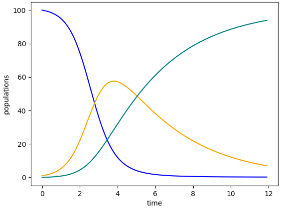

Chapter5Model Analysis and the Basic Reproduction Number \(\mathcal{R}_0\)
Goals
Develop the technique of sign analysis for analyzing outcomes of compartmental models
Investigate relationships between a compartmental disease model, the size of the total population being modeled, and each compartment's long-term population value
Introduce the basic reproduction number \(\mathcal{R}_0\) and its implication for outbreaks
By now, we have studied models from several perspectives. In Chapter 2 and the Zombie Game App, we generated data for an outbreak, constructed tables and graphs of data, and thought through how all these pieces of information fit together. Chapter 2 then introduced using a system of differential equations for describing the relationships. The Python code in Chapter 3 generated images of data points and solution curves for systems of differential equations. Finally, and crucially, we began drawing compartmental diagrams in Chapter 4.
These multiple forms of describing models all work together. They allow us to understand models and their results through graphs, equations, data, and diagrams. Now that we have these tools for discussing models, we take time to mathematically analyze models. Some of this analysis is necessary for confirming that our models make sense in relationship to the real world. Additional analysis of models gives us ways to think about controlling outbreaks.
Our starting point, using a combination of visual and equation-based understanding, begins in Exploration 5.1.
Exploration5.1.Rise and Fall of an Epidemic.
We first saw the SIR model in Chapter 4. The compartmental diagram appears in Figure 4.3 and the system of differential equations is the following:
\begin{align*}
\frac{dS}{dt} \amp = -\beta S I \\
\frac{dI}{dt} \amp = \beta S I - \gamma I \\
\frac{dR}{dt} \amp = \gamma I.
\end{align*}
Throughout this Exploration, continue to connect the model, graphs of its solution curves, and real-world meaning.
(a)
Look at the expressions on the right-hand sides of the differential equations for the SIR model.
Which terms are positive? Which terms are negative? What does this tell you about how each population can flow through the compartments?
For each differential equation, what signs (\(+\text{,}\)\(-\text{,}\) or \(0\)) are possible on the right-hand side? What does this tell you about the solution curves for the model?
(b)
For the graph in Figure 5.1, which curve goes with which compartment of the SIR model? Justify your reasoning in two ways:
Use your sign analysis, that is, the work you just did on describing solution curves based on the sign (\(+\text{,}\)\(-\text{,}\) or \(0\)) of the right-hand side of that compartment's differential equation in the SIR model.
Describe what happens in the Zombie Game App 1 when we run a simulation including zombie mortality, and confirm that these curves make sense in that context.

Figure5.1.One set of solution curves for the SIR model
Section5.1Using Calculus to Analyze Models
The work of Exploration 5.1 involves central ideas from introductory calculus. The equations of the SIR model are differential equations, which means they include derivatives. Derivatives represent change, and we often describe this change as the slope of a graph. The graphs we use in studying models are the solution curves of the model. That is, given equations for, say, \(dS/dt\text{,}\)\(dI/dt\text{,}\) and \(dR/dt\text{,}\) the solution curves are the graphs of \(S(t)\text{,}\)\(I(t)\text{,}\) and \(R(t)\text{,}\) with time \(t\) on the horizontal axis, and the populations \(S\text{,}\)\(I\text{,}\) and \(R\) on the vertical axis.
Now, let us continue with model analysis, specifically naming calculus concepts along the way.
Activity5.2.
Consider the SIR model:
\begin{align*}
\frac{dS}{dt} \amp = -\beta S I \\
\frac{dI}{dt} \amp = \beta S I - \gamma I \\
\frac{dR}{dt} \amp = \gamma I
\end{align*}
and define \(N(t)=S(t)+I(t)+R(t)\) to be the total population being modeled, at time \(t\text{.}\)
Each equation in this model represents the change in a single compartment's population, over time. How can we use the equations in the model to represent the change in total population over time? That is, how can we use the equations to represent \(dN/dt\text{?}\)
Determine the value of the change in total population: you should be able to compute a number. What does this number tell us about the total population in our model?
Add together the three differential equations. What is the meaning of the left-hand side? What is the meaning of the right-hand side? And what value do we obtain on the right-hand side when summing the differential equations?
Therefore, summing the three differential equations determines the change over time of the total population.
On the right-hand side:
\begin{align*}
(-\beta S I)+(\beta S I - \gamma I)+(\gamma I) \amp = 0.
\end{align*}
Since the three differential equations sum to zero, the change in total population is \(0\text{.}\) This tells us that the total population in our model does not change. In other words, the size of the total population \(N(t)\) remains constant.
The analysis in Activity 5.2 includes the following calculus concepts.
The sum of derivatives equals the derivative of the sum: \(\frac{dS}{dt}+\frac{dI}{dt}+\frac{dR}{dt} = \frac{d(S+I+R)}{dt}\text{.}\) Therefore \(\frac{dS}{dt}+\frac{dI}{dt}+\frac{dR}{dt} = \frac{dN}{dt}\text{.}\)
When the derivative of a function equals \(0\text{,}\) the function is unchanging: \(\frac{dN}{dt}=0\) indicates that \(N(t)\) is unchanging.
In an outbreak that occurs over a relatively short time, it may make complete sense to say that the population is unchanging. It may be that the population truly does not change at all, or it may be that the population is changing so little that we decide not to include population change in a model of the outbreak. Noticing when population change is \(0\text{,}\) or close to \(0\text{,}\) allows us to write relatively simple models that do not try to incorporate births, deaths, immigration, emigration, or other population changes. Models that represent a longer span of time may need to account for changes in population.
Considering population change requires us to think more deeply about compartment R. We have referred to this compartment as “Removed”. Some models call the R compartment “Recovered”. In an outbreak where people all return to full health, calling the R compartment “Recovered” works well. In an outbreak that causes deaths, one modeling option is to include both deaths and recoveries in the same R compartment. In this case, the name “Removed” provides a better description. In either case, recognizing that “R” may stand for differently named compartments is a reminder to us about why we should fully describe each of our models, even if we believe SIR models are well known to our audience: even among SIR models, the interpretations can differ.
For now, we continue to work with an SIR model in which population does not change. We note that some models do need to account for changes in population. As one example, models that represent a longer span of time may incorporate births and deaths. We will see such models later in this text.
Another comment: though we have said our current SIR model probably refers to an outbreak over a relatively short time span, we purposely do not designate amounts of time that are “relatively short” or “longer”. This is a choice for the modeler. For each model, a human (the modeler, or perhaps a group working together) makes decisions about whether to list population changes based on length of time or other reasons. They then provide their decisions when describing their models, and they include some form of justification for each decision.
Next, we go back to the SIR model we have been studying to work through some ways the model solutions can change as parameter values change.
Activity5.3.
Use the code below to create three different graphs of solution curves to an SIR model in which \(S(0)=75\text{,}\)\(I(0)=25\text{,}\)\(R(0)=0\text{,}\) and \(0 \leq t \leq 20\text{.}\) The first set of values for \(\beta\) and \(\gamma\) appear in the code block; change the code to get the other two sets of values. It may help you to save screenshots of each of the three graphs, so you can more easily see all three at the same time.
In the first graph, let \(\beta = 0.03\) and \(\gamma = 0.25\text{.}\)
In the second graph, let \(\beta = 0.01\) and \(\gamma = 0.4\text{.}\)
In the third graph, let \(\beta = 0.005\) and \(\gamma = 0.5\text{.}\)
Then respond to the prompts below the code block.
What observations can you make, overall, about the three graphs? Take time with this question, and think expansively, before moving on to the next questions.
Discuss the similarities and differences in the \(I(t)\) curves in each of your three graphs. Include observations using our sign analysis from Exploration 5.1: when is \(I(t)\) rising or falling, and what does this have to do with the sign (\(+\text{,}\)\(-\text{,}\) or \(0\)) of \(dI/dt\text{?}\)
Compare the long-term outcomes for \(S(t)\) and \(R(t)\) across the three graphs. What do you notice about the total number of people who ever became sick in each case?
Explore the role that changes to \(\beta\) make to the outcome in each graph. Similarly, think through how changes to \(\gamma\) contribute to changes. For each parameter, decide first how you think changing the parameter will change the solution curves. Then use the code block to make several changes to that parameter, and compare what you see with what you thought you would see.
In the first two graphs, \(I(t)\) rises, then falls. For a sign analysis, first write out the differential equation for \(dI/dt\text{.}\) Then substitute in the values of \(\beta\) and \(\gamma\) and the initial values \(S(0)=75\) and \(I(0)=25\) to see that \(\beta S I - \gamma I \gt 0\text{.}\) Yet \(S(t)\) decreases rapidly, until \(\beta S I - \gamma I \lt 0\text{,}\) and at this time the \(I(t)\) curve falls.
In the third graph, the \(I(t)\) graph has a negative slope from the very beginning. A sign analysis shows why this makes sense, based on the initial value of \(dI/dt\text{.}\)
In the first graph, everyone eventually gets sick. The long-term value of \(S(t)\) appears to be \(0\) and the long-term value of \(R(t)\) appears to be \(100\text{,}\) which is the total population.
In the second graph, not everyone gets sick in the outbreak. The \(S(t)\) curve appears to level out at a value of approximately \(8\text{.}\) Extending t_range beyond \(t=20\) can help for confirming this.
In the third graph, quite a few people avoid illness. Estimates for long-term values of \(S(t)\) and \(R(t)\) can confirm this.
There is much to say here. In general, increasing \(\beta\) makes more people become sick, and makes infection happen more rapidly. Decreasing \(\gamma\) leads to more infections. The \(S(t)\text{,}\)\(I(t)\text{,}\) and \(R(t)\) graphs are all affected by these changes, and the answer to this prompt should include descriptions of these changes.
Both Activity 5.3 and Exploration 5.1 use sign analysis. This usage of the signs (\(+\text{,}\)\(-\text{,}\) or \(0\)) of a derivative can inform us about circumstances in which a population is increasing, decreasing, or remaining constant. Such knowledge about the relationship between signs and derivatives comes from calculus and is tremendously powerful for understanding epidemics through compartmental modeling.
Let us take a moment to emphasize an assumption we make about signs when writing compartmental models. In many applications of mathematics, variables and parameters can take on the values of any real number. However, in compartmental models, we specify that variables and parameters cannot be negative because negative values would not make biological sense. For instance, populations of people cannot be negative, and length of time sick with a disease cannot be negative. Therefore, what we see is what we get: if no negative sign (\(-\)) is visible, then a term cannot be negative.
Here is a summary of some of the key outcomes in the SIR model from our sign analysis so far. Notice that all these observations arise from calculus concepts.
Sign analysis tells us that \(S(t)\) cannot increase: since \(dS/dt \leq 0\text{,}\) then \(S(t)\) can only decrease or remain constant.
Sign analysis tells us that \(R(t)\) cannot decrease: since \(dR/dt \geq 0\text{,}\) then \(R(t)\) can only increase or remain constant.
Sign analysis tells us that \(I(t)\) has the ability to increase, decrease, or remain constant because the formula for \(dI/dt\) can take on values that are positive, negative, or zero.
When \(dI/dt = 0\text{,}\) the graph of \(I(t)\) has a slope of \(0\text{.}\) In many simulations, there is a single value of \(t\) at which \(dI/dt = 0\) and the graph of \(I(t)\) turns from increasing to decreasing.
Eventually, in this model, the value of \(I(t)\) will approach \(0\text{,}\) and then the values of \(S(t)\) and \(R(t)\) will level out because \(dS/dt\) and \(dR/dt\) will approach \(0\text{.}\)
You may have found yet other ways to connect derivative signs (\(+\text{,}\)\(-\text{,}\) or \(0\)) with model outcomes.
In addition to looking at signs, we examined long-term outcomes in Activity 5.3. This is a moment to wonder: what can mathematical approaches tell us about limiting the impact of an outbreak? We explore this question in depth in Section 5.2.
Section5.2The Basic Reproduction Number \(\mathcal{R}_0\)
It turns out that the SIR model, and many other compartmental models, can be connected with an epidemiological concept called the basic reproduction number. The basic reproduction number is the average number of new infections caused by one infectious person in an otherwise entirely susceptible population. This number is given the symbol \(\mathcal{R}_0\text{,}\) which is pronounced as “R zero” or “R nought”.
In Activity 5.4, we begin to link our SIR model with the concept of \(\mathcal{R}_0\text{.}\)
Activity5.4.
This activity examines the boundary between rising and falling \(I(t)\) numbers in the SIR model we have been studying. We will see that this boundary relates to important information about the basic reproduction number \(\mathcal{R}_0\text{.}\)
Begin by using the code below to try different values of \(\beta\) and \(\gamma\text{.}\) Your goal is to find values for which the \(I(t)\) curve does not rise at first: instead, it stays level or falls. Keep the initial conditions the same, that is, \(S(0)=1900\text{,}\)\(I(0)=100\text{,}\) and \(R(0)=0\text{.}\) If changing the range of \(t\) values helps you see the outcome better, then change the end time to a smaller or larger value. However, keep the initial time \(t=0\text{.}\)
Can you find more than one combination of \(\beta\) and \(\gamma\) for which the \(I(t)\) curve does not rise?
You may wish to test your conclusions by viewing model output. To do this, you can modify the Python code provided as part of Activity 5.4. Updating the end time of the model simulation may be helpful: rather than end at \(t=15\text{,}\) consider extending the model for a longer period of time.
Next, consider the equation \(dI/dt = \beta SI - \gamma I\) from the SIR model. Under what conditions must \(dI/dt = 0\text{?}\) Think about these conditions biologically: what interpretations can you give the conditions?
The first part of this is open-ended. There are many combinations of \(\beta\) and \(\gamma\) for which the \(I(t)\) curve falls from the start.
For the second part of this, set the right-hand side of the \(dI/dt\) equation equal to 0 and factor:
\begin{align*}
\beta SI - \gamma I \amp = 0 \\
(\beta S - \gamma ) I \amp = 0
\end{align*}
This results in two possibilities: either \(\beta S - \gamma = 0\) or \(I=0\text{.}\) There are multiple biological interpretations of each possibility.
Smaller values of \(\beta\) lead to less growth of the \(I(t)\) curve and can help contribute to fewer total people ever becoming Infectious. Smaller \(\beta\) corresponds to less infectivity.
Larger values of \(\gamma\) also lead to less growth of the \(I(t)\) curve and can help contribute to fewer total people ever becoming Infectious. Larger \(\gamma\) corresponds to a higher rate of people moving from compartment I to compartment R.
Another way to think of the previous bullet point: smaller values of \(1/\gamma\) lead to less growth of the \(I(t)\) curve and can help contribute to fewer total people ever becoming Infectious. Given the relationship in (4.1), we see that smaller \(1/\gamma\) corresponds to a shorter length of time that people are Infectious.
If \(\beta\) and \(1/\gamma\) combine into a small enough value, the \(I(t)\) curve does not grow, even at the start of a model simulation.
We find that \(I(t)\) never grows if \(dI/dt \leq 0\) at the start of a simulation, that is, when \(t=0\text{.}\) This means
\begin{align*}
\beta S I - \gamma I \amp \leq 0 \\
(\beta S - \gamma) I \amp \leq 0.
\end{align*}
Since \(I \geq 0\text{,}\) the only way to achieve \((\beta S - \gamma) I \lt 0\) is to have \((\beta S - \gamma) \lt 0\text{.}\)
It would also be possible to have \((\beta S - \gamma) I = 0\) if \(I=0\text{,}\) but once an outbreak begins, we no longer have \(I=0\text{.}\)
As a reminder, we said that the basic reproduction number \(\mathcal{R}_0\) is the average number of new infections caused by one infectious person in an otherwise entirely susceptible population. We are nearly ready to present the formula for \(\mathcal{R}_0\) in the SIR model
\begin{align*}
\frac{dS}{dt} \amp = -\beta S I \\
\frac{dI}{dt} \amp = \beta S I - \gamma I \\
\frac{dR}{dt} \amp = \gamma I.
\end{align*}
However, we first emphasize that \(\mathcal{R}_0\) describes a phenomenon that occurs in an entirely susceptible population. When \(\mathcal{R}_0\) is described in the news or popular culture, as happened in many reports on COVID-19, the “entirely susceptible population” part of the \(\mathcal{R}_0\) definition is usually left out.
To incorporate the idea of an entirely susceptible population, we refer back to our definition of total population\(N(t)\text{,}\) which appeared in Activity 5.2. In that activity, we showed that \(N(t)\) remains constant in this SIR model. We can therefore write \(N(t)\) more simply as \(N\text{,}\) since the value of \(N\) does not change over time.
We now have all the pieces we need to assemble a formula for \(\mathcal{R}_0\) in the SIR model (4.3), (4.4), and (4.5):
\begin{align}
\mathcal{R}_0 \amp = \frac{\beta N}{\gamma} \mbox{ for our SIR model}. \tag{5.1}
\end{align}
It is possible to compute the formula for \(\mathcal{R}_0\) from the equations in a compartmental model. The most common way to do this is called the Next Generation Method. Because the Next Generation Method uses partial derivatives and techniques from linear algebra, it is described in the optional sections Chapter 13 and [cross-reference to target(s) "ch-the-next-generation-method-connecting-theory-with-practice" missing or not unique]. In particular, Chapter 13 teaches the process in a way that can be used by students who are new to matrix operations and partial derivatives: there are a few math techniques to learn, and Python does the rest. Readers who include Chapter 13 will be able to solve for the formula for \(\mathcal{R}_0\) in their own models. As an alternative, the \(\mathcal{R}_0\) formulas for several commonly used compartmental models are provided directly throughout this text.
The numerical value of the \(\mathcal{R}_0\) formula relates closely to the trajectory of an outbreak. Investigate this in Activity 5.5.
Activity5.5.
Here, we connect two ideas: the circumstances under which \(dI/dt=0\text{,}\) according to our work in Activity 5.4, and the formula for \(\mathcal{R}_0\text{,}\) as given in (5.1).
Start with the following result from Activity 5.4: in order to have \(dI/dt=0\) when \(I \neq 0\text{,}\) it must be that \(\beta S - \gamma = 0\text{.}\) Show how to rearrange the equation \(\beta S - \gamma = 0\) algebraically to get
When \(\frac{\beta S}{\gamma} \gt 1\text{,}\) is \(dI/dt\) rising or falling?
When \(\frac{\beta S}{\gamma} \lt 1\text{,}\) is \(dI/dt\) rising or falling?
In a typical outbreak, what changes to cause \(\frac{\beta S}{\gamma}\) to transition in sign between being positive, negative, and \(0\text{?}\) What is the expected order of these signs, that is, out of \(+\text{,}\)\(-\text{,}\) and \(0\text{,}\) which happens first in an outbreak, which happens second, and which happens third? Why is this the order?
After completing the above questions, next consider the formula from (5.1), which says that \(\mathcal{R}_0 = \frac{\beta N}{\gamma}\text{.}\) Use the work you have already done in this activity, along with the definition of \(\mathcal{R}_0\) as being the average number of new infections caused by one infectious person in an otherwise entirely susceptible population, to describe what \(\mathcal{R}_0\) tells us about the behavior of \(I(t)\) early in an outbreak.
When \(\frac{\beta S}{\gamma} \gt 1\text{,}\) then \(dI/dt \gt 0\text{,}\) which means that the number of Infectious people is increasing. This typically happens early in an outbreak. As the outbreak continues, the value of \(S\) becomes smaller, so that eventually \(\frac{\beta S}{\gamma} = 1\) (which means \(dI/dt = 0\)), and then \(\frac{\beta S}{\gamma} \lt 1\) (which means \(dI/dt \lt 0\) and the number of Infectious people is decreasing).
With one infectious person in an otherwise entirely susceptible population, it is approximately true that \(S(t)=N\text{,}\) that is, that the Susceptible population is essentially the entire population. Therefore, \(\mathcal{R}_0\) is a way of indicating what happens to the \(I(t)\) population at the very start of an outbreak.
As we have seen in Activity 5.5, the value of \(\mathcal{R}_0\) tells us what happens at the very start of an outbreak. This relates to the definition of \(\mathcal{R}_0\text{,}\) which considers a single infectious person in an otherwise entirely susceptible population.
To be more specific, when \(\mathcal{R}_0 \gt 1\text{,}\) the value of \(dI/dt\) is initially positive, which means that the value of \(I(t)\) initially increases. Only later, when there are fewer susceptibles, does the graph of \(I(t)\) level off and begin to fall.
Alternately, if \(\mathcal{R}_0 \lt 1\text{,}\) then the value of \(dI/dt\) is initially negative. In this case, the graph of \(I(t)\) never rises: it only falls.
The value of \(\mathcal{R}_0\text{,}\) then, tells us whether to expect increasing numbers of Infectious individuals. The specific number \(1\) is the boundary between rising and falling values of \(I(t)\) when a new infection is first introduced to a susceptible population. We will further see that larger values of \(\mathcal{R}_0\) correspond to diseases that are more infectious. The concept of \(\mathcal{R}_0\) will be central to our study of outbreaks.
For Further Thought5.3For Further Thought
1.
Do some mathematical analysis of this SI model:
\begin{align*}
\frac{dS}{dt} \amp = -\beta S I \\
\frac{dI}{dt} \amp = \beta S I.
\end{align*}
In particular,
Sum the differential equations and use your results to describe how the total population being modeled changes over time.
Perform a sign analysis on the \(dS/dt\) equation, indicating mathematically feasible ways in which the population \(S(t)\) can change during the time of the outbreak.
Perform a sign analysis on the \(dI/dt\) equation, indicating mathematically feasible ways in which the population \(I(t)\) can change during the time of the outbreak.
Investigate the role of \(\beta\) in changing the outcomes of the model. Describe ways in which changing \(\beta\) can change the outcomes, and describe what those changes are. Also describe ways in which the outcomes cannot be changed by changing \(\beta\text{.}\)
2.
Imagine a new outbreak occurs in a small town of 5000 people. Let us suppose it makes sense to model this outbreak with an SIR model, where the compartments are Susceptible (people who are not sick but can become sick), Infectious (people who are currently able to spread the disease), and Removed (people who are no longer able to spread the disease and are unable to become sick again). At the start of the outbreak, a single person is Infectious, and the rest of the people are Susceptible.
Suppose that, in the early days of the outbreak, researchers estimate \(\beta \approx 0.0001\) and \(\gamma \approx 0.2\text{.}\) Compute the value of \(\mathcal{R}_0\) for this model. Then, based on the value of \(\mathcal{R}_0\) you compute, answer: what do you think will happen in the short term and in the long term of this outbreak?
Now suppose that the value of \(\beta\) was instead approximated to be \(0.00001\text{,}\) yet it is still true that \(\gamma \approx 0.2\text{.}\) Compute the value of \(\mathcal{R}_0\) in this case. With this value of \(\mathcal{R}_0\text{,}\) what do you anticipate for the short-term and long-term outcomes of the outbreak?
Now suppose this outbreak occurs in a town of 1000 people, with \(\beta \approx 0.0001\) and \(\gamma \approx 0.2\text{.}\) Compute the value of \(\mathcal{R}_0\) for the SIR model in this smaller town. Use this value of \(\mathcal{R}_0\) to describe what you think will happen in the short term and in the long term of this outbreak.
Adapt the Python code shown earlier in this chapter to produce graphs of the outcomes of the SIR models in parts (a), (b), and (c) above. Write a few sentences about how well your descriptions of short-term and long-term model outcomes are supported, or not supported, by the graphs.
3.
Most diseases we know of have \(\mathcal{R}_0 \gt 1\text{.}\) This makes sense: without rising numbers of Infectious people, we do not experience an epidemic. However, in rare cases, a disease emerges for which \(\mathcal{R}_0 \lt 1\text{.}\) One example is MERS, which stands for Middle East Respiratory Syndrome. The first identified case of MERS was in 2012. There is still a lot to learn about MERS, but multiple estimates indicate that the value of \(\mathcal{R}_0\) for MERS is less than one.
This activity is motivated by the existence of diseases with \(\mathcal{R}_0 \lt 1\text{.}\) Suppose we study a disease for which \(\mathcal{R}_0 \approx 0.5\) and \(\gamma = 0.1\text{,}\) that is, people are typically infectious for about ten days. Suppose we choose to model this disease with an SIR model similar to the models we have been using in this chapter: “S” stands for Susceptible, meaning people who are not sick but can become sick; “I” stands for Infectious, meaning people who are currently able to spread the disease, and “R stands for” Removed, meaning people who are no longer able to spread the disease and are unable to become sick again. In the case of a disease similar to MERS, the Removed compartment consists of both recoveries and deaths from the disease.
In an area with a population of 1000, rearrange (5.1) to solve for the value of \(\beta\) for this SIR model.
Suppose that at the start of the outbreak, 20 people are Infectious. Use the Python block below to visualize the outbreak over 200 days. Notice that the Python block includes three print commands. These print and label the last output values stored as sol, that is, the \(S(t)\text{,}\)\(I(t)\text{,}\) and \(R(t)\) values for the last value of time \(t\text{,}\) namely \(t=200\text{.}\)
Use caution: by default, the Python block does not contain the correct value for \(\beta\text{.}\) Instead, replace the existing \(\beta\) value with the value you computed in part (a).
Use the graphs to describe qualitatively what happens in this population that began with 20 Infectious people. Does the curve for the \(I(t)\) population begin falling from the very beginning? What happens to the curves for \(S(t)\) and \(R(t)\text{?}\)
Incorporate the output from the print command, along with the visual output of the graphs. How many people, in total, were Infectious at some point during the time of this model? How does this compare with the initial 20 cases? How do you reconcile this result with the behavior of the \(I(t)\) curve and with the knowledge that \(\mathcal{R}_0 \lt 1\) in this model?